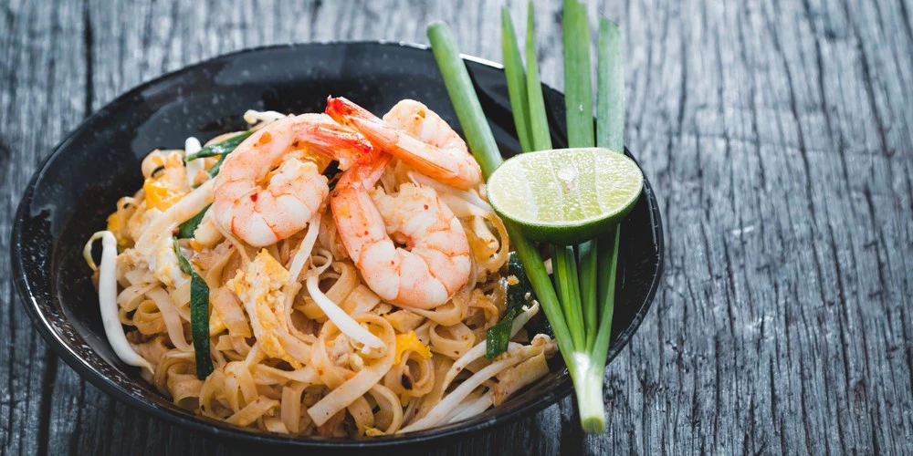

Se trata de un plato salteado en wok a base de tallarines de arroz con huevos, salsa de pescado, pasta de tamarindo, y cualquier combinación de brotes de soja, camarones, pollo decorado con cacahuates picados igual que tostados y cilantro.